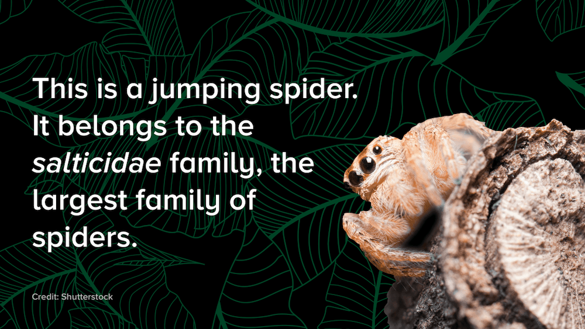
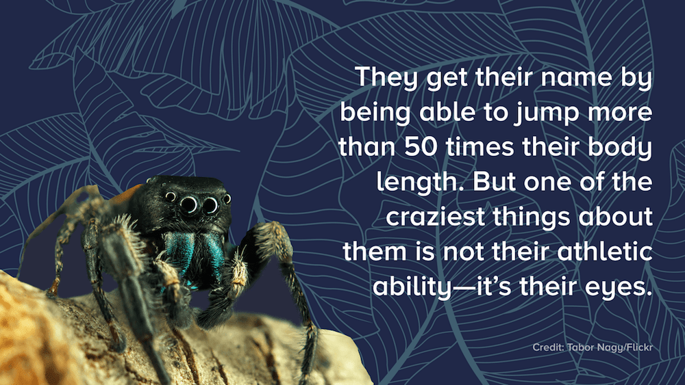
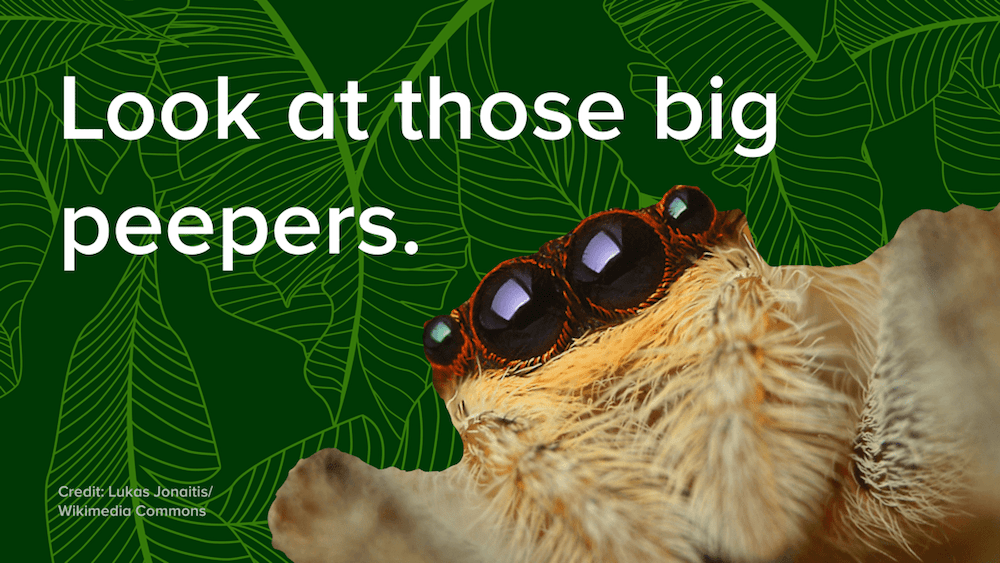
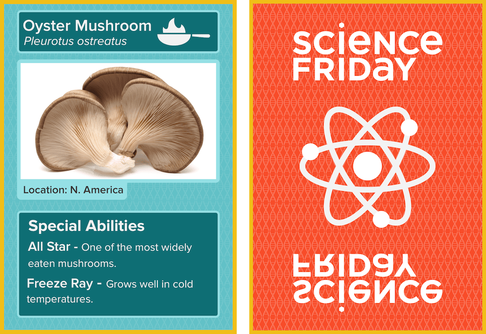
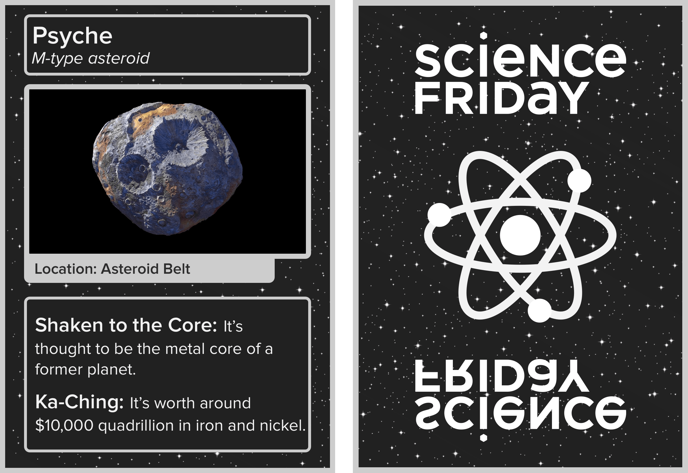

One of my main responsibilities at Science Friday is to adapt radio content for the web. Sometimes, this means creating original graphic designs that suits a web audience.
Graphic Story Cards
Article: Crazy Eights: The Extraordinary Eyes of the Jumping Spider
  Playing Cards
Article: Good Mushroom, Bad Mushroom: Fun(gus) Trading Cards
Article: Facts About Asteroids that Rock
Animations